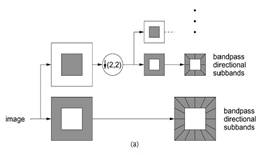
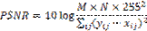

A Novel Secure Steganography In Contourlet Domain
Abstract
Steganography is a technique for secret data communication in an appropriate multimedia medium such as video, audio, image and text files. In this paper, a digital image steganography method provided by the Contourlet domain. In this approach contourlet coefficients within each block separately use a permutation genetic algorithm optimization for hiding the data as a mapping function. The optimal pixel adjustment process (OPAP) is applied after embedding the message to improve the hiding capacity with low distortions. The simulation results show that the quality factor in this method outperform other methods in Contourlet domain, moreover it has high resistance to important steganalysis methods in the Contourlet domain. Thus the proposed approach is also a secure method of steganography.
Authors:
Hadiseh Ramezani, Farshid Key Nia, Mahdi Jafari Shahbaz Zadeh
Department of Computer Engineering
Kerman Science and Research Branch of Islamic Azad University
Kerman, Iran
Paper Transcript of Paper Titled :
A Novel Secure Steganography In Contourlet Domain
A Novel Secure Steganography In Contourlet Domain
Hadiseh Ramezani, Farshid Key Nia, Mahdi Jafari Shahbaz Zadeh
Department of Computer Engineering
Kerman Science and Research Branch of Islamic Azad University
Kerman, Iran
Abstract—Steganography is a technique for secret data communication in an appropriate multimedia medium such as video, audio, image and text files. In this paper, a digital image steganography method provided by the Contourlet domain. In this approach contourlet coefficients within each block separately use a permutation genetic algorithm optimization for hiding the data as a mapping function. The optimal pixel adjustment process (OPAP) is applied after embedding the message to improve the hiding capacity with low distortions. The simulation results show that the quality factor in this method outperform other methods in Contourlet domain, moreover it has high resistance to important steganalysis methods in the Contourlet domain. Thus the proposed approach is also a secure method of steganography.
Keywords-contourlet domain; genetic algorithm; optimal pixel adjustment process (OPAP); steganography
Introduction
Word Steganography means concealed writing from the Greek word stego (mean cover) and graphy (writing) is used [1]. Steganography is the art of hiding information in a host media such as audio, image, video or text, without noticeable degradation. Until now, many methods have been proposed for hiding data in images. We have two different methods: steganography in spatial or in transfer domain.
The method of spatial domain is very simple and is not detectable by the human eyes. In this method, the pixel value of the image can be manipulated directly. While in transfer domain the coefficient of transfer domain is manipulated. Discrete cosine transform (DCT), Wavelet and Contourlet transform are an example of this.
OutGuess [2], F5 [3], Jsteg [4] and (PQ) [5] are the most important algorithms in DCT. The important feature of DCT, is that after image transform in this domain most of energy is locating at low frequencies (initial conversion coefficients), therefore, exclude or modify the coefficients with greater index, have not important change in the location of the steganography in wavelet domain due to two general properties: being closer to the human visual system and lack of distortions caused by the blocking. Several methods have been presented so far in this domain [6, 7, 8, 9].
CONTOURLET DOMAIN
Contourlet transform was proposed in [12]. The contourlet transform provides a multi-scale and multi-directional image expansion. The laplacian pyramid (LP) (10) is first used to capture the point discontinuities, and then followed by a directional filter bank (DFB) (11) to link point discontinuities into linear structures. There is a few studies in this field such as [13, 14 , 15].

Figure 1. Diagram of a pyramidal directional filter bank (PDFB)
Embedding and Extraction in Contourlet domain
Contourlet transform is composed of two main parts: the analysis of Laplacian Pyramid (LP) and a Directional Filter Bank (DFB). The original image is transformed by a Laplacian pyramid, image, band pass and low pass image.
THE PROPOSED METHOD
In this method, in order to enhance the quality of stego image, three main factors contourlet transform, genetic algorithm and optimal pixel adjustment process (OPAP) was used.
A. The embedding process is carried out as follows:
Part 1: The cover image is transformed to contourlet domain, is decomposed with four levels of Laplacian pyramid and sixteen directional filter banks.
Part 2: The regions of the subbands in which the data can be embedded are identified and divided into 8 × 8 blocks.
Part3: the Chromosomes of genetic algorithm, are the number of bits in each block of 1 to 64, we define the default mapping function of 1 to 64 in order.
Part 4: embed the data in 4-LSB of contourlet coefficients.
Part 5: Apply the genetic algorithm based on maximizing the fitness function and determine the optimal mapping function in each block separately. Genetic algorithm, select the best Permutation of pixel blocks in terms of quality (high levels PSNR), to embed the selected data.
Part 6: Apply the OPAP in order to increase the quality of cover image.
Part 7: Calculate the contourlet decomposition of each block.
B. OPAP algorithm :
The main goal of this algorithm[17] is minimizing the error between the cover image and the stego image [18]. Embedded error in this case is:
(1)
Hi'' = Hi' + 2k, if Hi'' in [0,255]
ELSE IF LSBi – Si< -2k-1
Hi
Return Hi
Where Hi' is the pixel with the secret massage S in it. And Hi is a copy of Hi'.
C. Extraction Process
The key used in the embedding process must be shared by the sender and the receiver. Hidden extraction process involves the following steps.
Part 1: The stego image is decomposed with 4 levels LP and 16 directional filter banks of contourlet transform.
Part 2: The selected subbands is recognized.
Part 3: the shared key is used to find the sequence of pixels in each block that contain secret messages.
Part 4: Extract 4-LSBs for each pixel, and discover the secret data.
D. Genetic Algorithms
In this study, we have a permutation genetic algorithm for different permutations embed secret data per each block, based on PSNR of the image. For using genetic algorithm first of all we should define our chromosomes.
E. Design chromosomes
Each block contains 64 contourlet coefficients as one chromosome. The proposed approach uses single-point crossover operator to combine chromosomes. Here, genetic mutation is random and the method is based on tournoment.
F. fitness function design
Here the fitness function try to maximize peak signal to noise ratio (PSNR). Thus, the fitness function according to equation (2) are defined.
(2)

Where M and N are the size of image, y and x are the intensity of gray level of image in the pixel i, j.
SIMULATION RESULT
The proposed approach is simulated by using the software R2009aMATLAB XP operating system with the Intel CPU 2.26GHz and has 1GB RAM. The images used in this study, 4 gray scale images Baboon, Lena, Jet and Boat 8-bit size is 512 * 512[18]. Table 4-1 shows the results of the comparison. The proposed method has been proposed in [18, 19, 16] are compared.
table i. comparison the proposed method with the method proposed in [18, 19, 16].
Cover image |
Method |
PSNR |
capacity |
|
Lena |
[18] |
39.94 |
50 % |
|
[19] |
44.90 |
27.43 % |
||
[16] |
45.20 |
56.63 % |
||
Proposed method |
46 . 66 |
56.63 % |
||
Baboon |
[18] |
40.34 |
50 % |
|
[19] |
44.96 |
27.34 % |
||
[16] |
43.69 |
51 % |
||
Proposed method |
44.98 |
51 % |
||
Boat |
[18] |
40.44 |
50 % |
|
[19] |
44.92 |
27.33 % |
||
[16] |
42.63 |
58.30 % |
||
Proposed method |
43 . 96 |
58.30 % |
||
Jet
|
[18] |
45.20 |
50 % |
|
[19] |
44.76 |
27.33 % |
||
[16] |
45.55 |
46.02 % |
||
Proposed method |
47.21 |
46.23 % |
This approach is also proposed two algorithms of steganalysis in Contourlet domain CBS [20] and [21], moreover it is evaluated by the method proposed in [15] and the method of [16]. In these two steganalysis algorithm a non-linear SVM used to distinguish between the original image and the cover image. In order to evaluate 300 images (150 cover and 150 stego image) from Washington University image database [22] has been chosen randomly for testing.
table ii. comparison the proposed method with the method proposed in [15, 16].
Secret data size(bits) |
method |
Average detection accuracy (%) by [21] |
Average detection accuracy (%) by CBS |
|
5000 |
ContSteg |
77 |
59 |
|
[16] |
- |
59 |
||
Proposed method |
72 |
58 |
||
10000 |
ContSteg |
89 |
63 |
|
[16] |
- |
62 |
||
Proposed method |
82 |
61 |
||
15000 |
ContSteg |
93 |
68 |
|
[16] |
- |
65 |
||
Proposed method |
90 |
67 |
RESULTS
This is a new steganography technique that enhances the quality of the stego image. To enhance the quality of the stego image three important factor such as contourlet domain, genetic algorithm and optimization of pixel adjustment process (OPAP) was used.
The results of the implementation shows that, quality factor in this method is the same method in contourlet domain further. The proposed method has high resistance to steganalysis methods in the contourlet domain. Thus the proposed approach is also a secure method of steganography.
References
N. Johnson, S. Jajodia, ''Exploring steganography: Seeing the unseen'', IEEE Computer, 1998, pp. 26-34.
N. Provos, P. Honeyman, ''Hide and seek: An introduction to steganography'', IEEE Security and privacy, 2003, pp. 32-44.
A. Westfeld, ''F5-a steganographic algorithm: high capacity despite better steganalysis'', 4th Int. Workshop of Information Hiding, 2001, pp. 289-302.
I. Avcibas, M. Kharrazi, N. Memon, B. Sankur, ''Image steganalysis with binary similarity measures'', EURASIP Journal on Applied Signal Processing, 2005, vol. 17, pp. 2749-2757.
J. Fridrich, M. Goljan, D. Soukal, ''Perturbed quantization steganography with wet paper codes'', Proc. ACM Multimedia Workshop, Germany, 2004.
K.B. Raja, Vikas, K. Venugopal, L. Patnaik, ''High Capacity Lossless Secure Image Steganography using Wavelets'', Proc. of Int. Conference on Advanced Computing and Communications, 2006, pp. 230-235.
R. Safy, H. Zayed, A. Dessouki, ''An Adaptive Steganographic Technique Based on Integer Wavelet Transform'', Proc. of Int. Conference on Networking and Media Convergence, 2009.
L. Zhang, H. Wang, R. Wu, ''A High-Capacity Steganography Scheme for JPEG2000 Baseline System'', IEEE Transactions on Image Processing, 2009, vol. 18, no.8, pp. 1797-1803.
K. Zhiwei, L. Jing, H. Yigang, ''Steganography based on wavelet transform and modulus function'', Journal of Systems Engineering and Electronics, 2007, vol. 3, pp. 628-632.
P-J. Burt, E-H. Adelson. The Laplacian pyramid as a compact image code, IEEE Trans. Commun, vol. COM-31, 1993, no.4, oo.532540.
R-H. Bamberger, M J T. Smith. A filter bank for the directional decomposition of images: theory and design, IEEE Trans. On Signal Processing, 1992, 40:882-893.
M-N. Do, M. Vetterli, ''The contourlet transform: An efficient directional multiresolution image representation'', IEEE Transaction on Image Peocessing, 2005, vol. 14, pp. 2107-2116.
M. Mohan, P.R. Anurenjan, ''A Novel Data Hiding Method in Image using Contourlet Transform'', Recent Advances in Intelligent Computational Systems(RAICS), 2011.
N.M. Mathew, K.A. Navas, ''Data Hiding in Medical Image Using Contourlet Transform'', NCTT, 2008.
H. Sajedi, M. Jamzad, ''ContSteg: Contourlet-Based Steganography Method'', Wireless Sensor Network, 2009, no 3, pp. 163-170.
H. Ramezani, F. Key nia, F. Ramezani, ''A novel image steganography in contourletdomain using genetic algorithm'', International Journal of Future Computer and Communication, 2013, Vol. 2, No. 4, pp.359-363.
C-K. Chan, L-M. Cheng, ''Hiding data in images by simple LSB substitution'', Pattern Recognition, 2004, vol. 37, no.3, pp. 469–474.
E. Ghasemi, J. Shanbehzadeh, N. Fassihi, ''High capacity image steganography using wavelet transform and genetic algorithm'', In: Lecture notes in engineering and computer science'': proceedings of the international multi conference of engineers and computer scientists IMECS, Hong Kong, 2011, pp 495-498.
P-Y. Chen, H-J. Lin, ''A DWT Based Approach for Image Steganography'', International Journal of Applied Science and Engineering, 2006, Vol. 4, No. 3, pp. 275-290.
H. Sajedi, M. Jamzad, ''A steganalysis method based on contourlet transform coefficients'', Proceeding of 4th Interna tional Conference on Intelligent Information Hiding and Multimedia Signal Processing, 2008.
V. Natarajan , R. Anitha, ''Blind Image Steganalysis based on contourlet transform'', International Journal on Cryptography and Information Security (IJCIS),Vol.2, No. 3, 2012.
http://www.cs.washington.edu/research/ima-gedatabase.